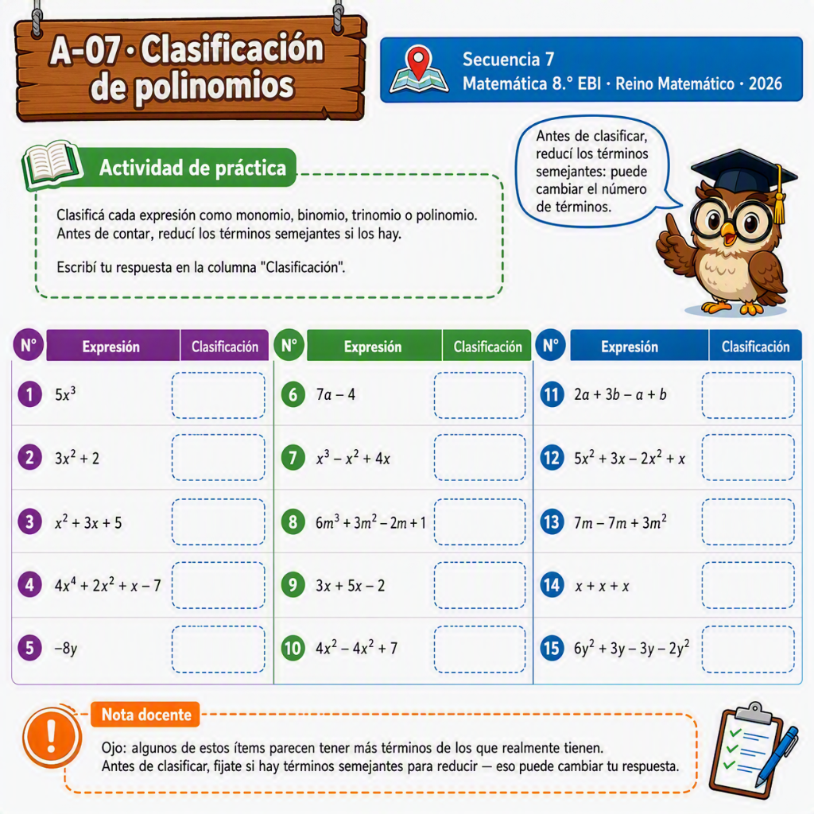

Reino Matemático · Secuencia 7 Pública / A-07
Actividad de práctica
15x³
23x² + 2
3x² + 3x + 5
44x⁴ + 2x² + x − 7
5−8y
67a − 4
7x³ − x² + 4x
86m³ + 3m² − 2m + 1
93x + 5x − 2
104x² − 4x² + 7
112a + 3b − a + b
125x² + 3x − 2x² + x
137m − 7m + 3m²
14x + x + x
156y² + 3y − 3y − 2y²
Nota docente
Ojo: algunos de estos ítems parecen tener más términos de los que realmente tienen. Antes de clasificar, fijate si hay términos semejantes para reducir — eso puede cambiar tu respuesta.
Hoja ilustrada

Versión ilustrada para completar a mano, con el mismo contenido verificado arriba.
Fernández, G. M. (2026). Clasificación de polinomios — Secuencia 7 Pública. Reino Matemático. Elaboración propia, inspirada en el enfoque de clasificación de polinomios de Porras (2024), sin reproducir su texto.
Licencia CC BY-NC-SA 4.0 — se permite compartir y adaptar citando autoría, sin fines comerciales.